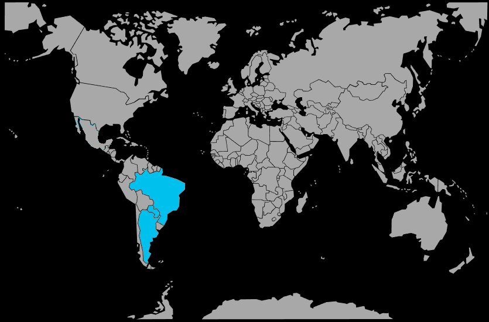

Systématique
- Ordre : Cichliformes
- Famille : Cichlidae
- Sous‑famille : Geophaginae
- Genre : Apistogramma
- Espèce : Apistogramma borellii
Apistogramma borellii est un cichlidé nain sud‑américain très apprécié pour ses couleurs jaunes intenses chez le mâle et ses comportements reproductifs faciles à observer.
Les mâles atteignent 7 à 8 cm, les femelles 5 à 6 cm, avec une silhouette délicate et une nageoire dorsale bien développée chez le mâle.
L'espèce est territoriale mais plutôt docile, ce qui la rend accessible aux aquariophiles débutants ; elle se maintient en couple ou en harem dans un bac bien structuré.
Elle apprécie les aquariums plantés avec de nombreuses cachettes et des zones calmes ; elle cohabite bien avec des petites espèces paisibles, à condition de respecter les volumes recommandés.
Mode : pondeur en cavité ; la femelle choisit une petite grotte ou un petit tuyau, où elle dépose et ventile les œufs avec soin.
L'espèce est considérée comme très facile à reproduire ; une eau douce, légèrement acide et bien filtrée encourage les pontes fréquentes et l'élevage naturel des alevins.
Dimorphisme sexuel : très marqué ; les mâles développent une robe jaune vif à dorée, avec des nageoires impaires allongées, tandis que les femelles restent gris‑brun à beige et jaunissent légèrement en reproduction.
Espérance de vie : 4 à 6 ans en captivité dans de bonnes conditions de maintenance.
L'espèce fréquente les zones calmes et peu profondes de petits cours d'eau, marécages et forêts inondées du Paraguay et du Paraná, avec un substrat riche en feuilles mortes.
Répartition
Origine naturelle :
- Bassin du río Paraná en Amérique du Sud.
- Affluents du río Paraguay, notamment le río Tebicuary en Argentine et au Paraguay.
- Zones inondées et cours d'eau secondaires du Chaco et de la Mésopotamie argentine.
L'espèce est endémique de la région du Paraná inférieur et du Paraguay, dans des zones tempérées à subtropicales, bien différentes des vraies espèces amazoniennes.
Paramètres de maintenance
Température : 22 à 26 °C, voire jusqu'à 28 °C en période chaude.
pH : 5,5 à 7,0, eau douce à légèrement acide.
GH : 2 à 10 °dGH, eau douce à moyennement dure.
Courant : très faible, avec beaucoup de zones calmes et de cachettes.
Volume conseillé : à partir de 60–80 L pour un couple, très bien planté.
Régime alimentaire
Régime : omnivore à tendance carnivore ; il consomme petits invertébrés, larves d'insectes et micro‑organismes du substrat.
En aquarium, il apprécie les nourritures vivantes (artémias, daphnies, micro‑vers) et accepte facilement les granulés fins de bonne qualité.
Une alimentation variée, distribuée régulièrement en petites portions, favorise les belles couleurs jaunes et les reproductions naturelles.